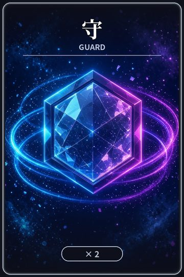
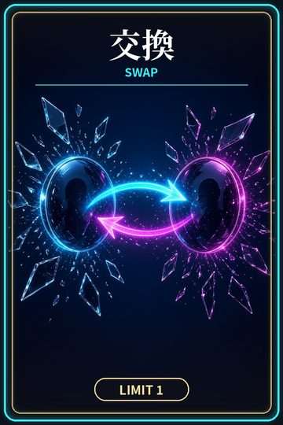
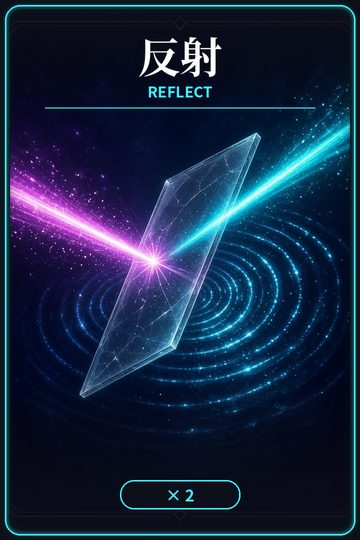
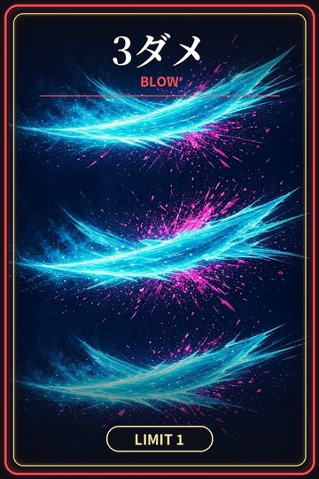
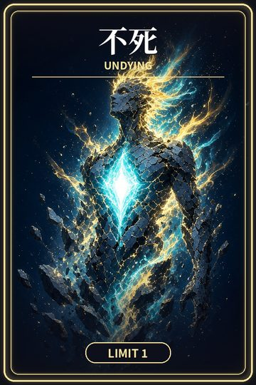
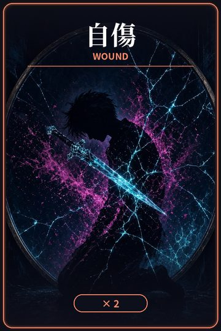
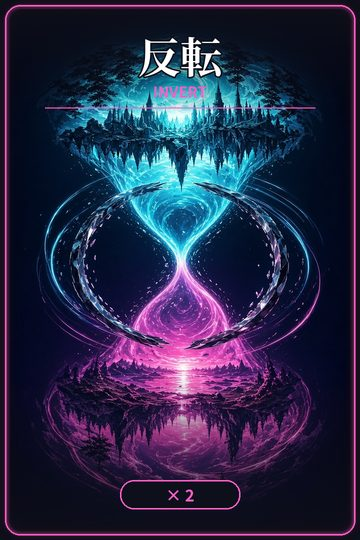
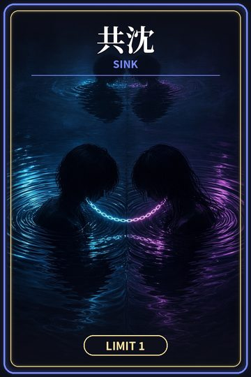
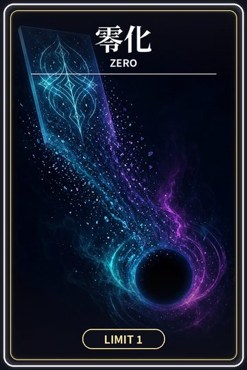
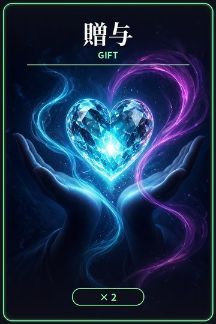

カード効果一覧
痛みは消えない。返す側が勝つ。
特殊カード（毎R 手札から1枚タップで即確定）
プールは特殊のみで7枚構築・3ダメ／交換／零化／不死／共沈は各1枚まで、守／反射／自傷／反転／贈与は各2枚まで。開始時にプールからランダム3枚を手札に引く（引いた札は山札から除去）。手札の特殊は持ち越し、場で消失した特殊1枚ぶんだけ山札から1枚補充（山札切れなら補充なし・同じ札が二重に出ることはない）。使った特殊はプールから消失。
 守 GUARD | 相手起源のあらゆるダメージ（3ダメ・共沈）と相手のカード効果（交換・贈与など）を無効に（自傷は自分起源なので防げない）。欠ける前に、こちら側だけを閉じる。 |
 交換 SWAP | 互いのライフを入れ替える。あなたの真実と、私の影を入れ替える。 |
 反射 REFLECT | 跳ね返す痛みの構え（現行ルールでは跳ね返す対象ダメージなし）。投げた刃が、投げた側の輪郭へ戻る。 |
 3ダメ BLOW | 相手に3ダメ（反射されない・守でブロックされる）。数字が、三発で対称を殴り割る。 |
 不死 UNDYING | 出したRから2ターン後のRまで（R1で出す→R3終了まで）、ライフ0以下でも試合継続。反転でマイナス・交換で0以下を受けても生存。ダメは通常どおり受け、マイナス表示。期間終了時に0以下なら敗北。消えない側に、残像だけが残る。 |
 自傷 WOUND | 自分に3ダメ（自分起源のため守でも防げない・反射とは無関係）。自分を削って、穴を深くする。 |
 反転 INVERT | 自分のライフの符号を反転（0は0）。不死中はマイナスでも生存、保護外でマイナスになれば敗北。表と裏が、同時に真実になる。 |
 共沈 SINK | お互いのライフ −2。二人で沈むなら、それは勝ちに近い。 |
 零化 ZERO | 自分のライフを0にする（保護外なら敗北）。すべてを、欠けの形に戻す。 |
 贈与 GIFT | 相手のライフ ＋2（上限5）。渡しすぎた光が、相手の余白を埋める。 |
場の表示
場は両者とも常に1枚（特殊カードのみ）。
解決順
不死開始 → 交換 → 反転 → ライフ演算（零化→贈与→共沈）→ 3ダメ・自傷 → 勝敗判定
勝敗
ライフ0以下（不死保護外）で敗北。最大5R、終了時は残ライフ→残特殊数で判定。
← ゲームに戻る